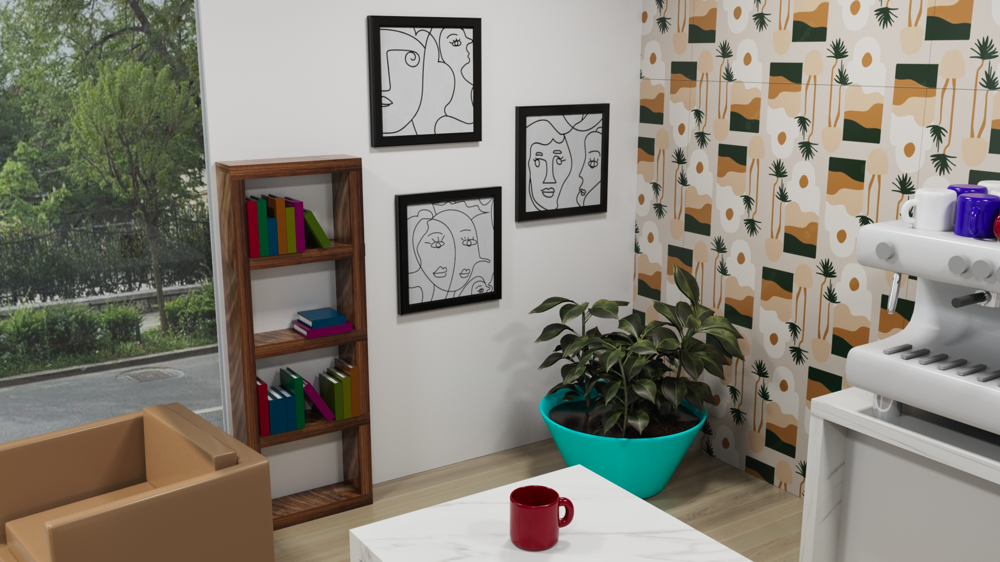
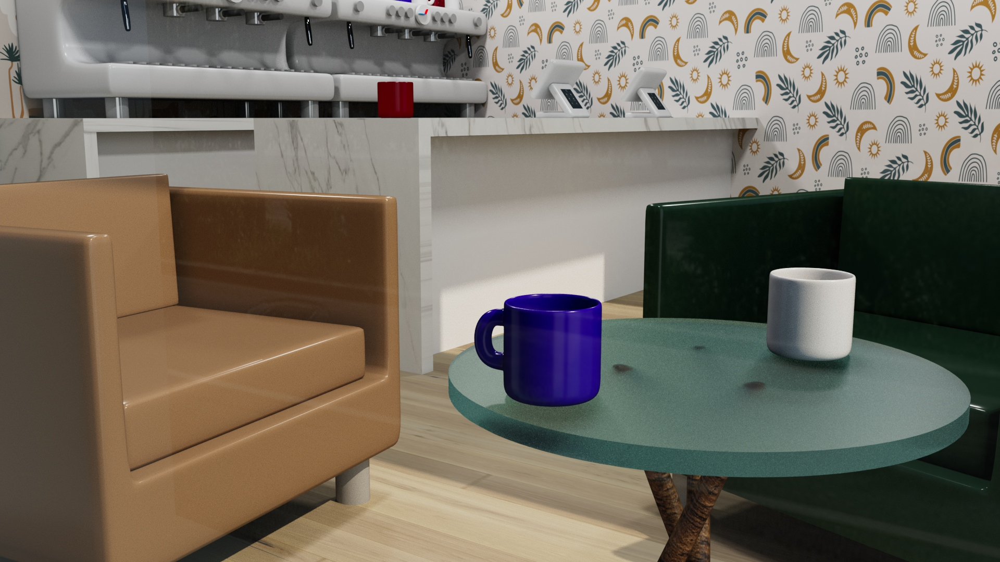

Cafe Project @NYU
Using MAYA software, I created a 3D rendering of a cafe that I designed. Starting from the cafe layout, basic structures, like the walls, tables, and chairs, were created.
Then, small items, such as mug cups, espresso machines, and register, were created. Then, the addition of textures and light were implemented, creating this final look of the cafe.

